My Favorite Things 2024 Edition
This list is pretty for everything I like between roughly the end of 2023 to whenever I decide to cut it to make the next page.
Games:
Cobalt Core
My goodness, Cobalt Core. I didn't expect much when I picked this game up for whatever reason, but you could probably track my enjoyment of it on a logarithmic scale. I know this list is ostensibly for 2024, but Cobalt Core is definitley my favorite game of 2023. It doesn't have insane complexity to the level of similar rougelikes like Slay the Spire, but it makes up for that with a cute story and fun characters, and having a more solid 'ending' of sorts.
Highlight: Playing the final card in the [REDACTED] sequence.

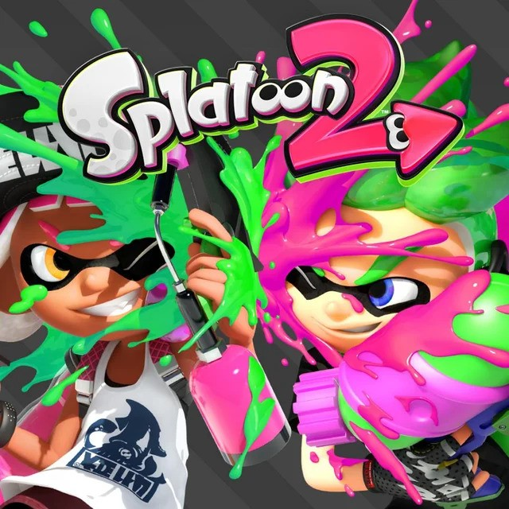
Splatoon 1, Splatoon 2, Splatoon 2: Octo Expansion
Decided to start playing through the story modes for all of the Splatoon games recently, and I've been having fun! The character writing really picks up after splatoon 2, and it really finds footing around Octo Expansion. as of writing, I haven't finished Splatoon 3's hero mode, or started side order, so I'm intrigued.
Highlight: When Pearl says she's bored of breaking all the boxes in Octo expansion
Undertale Yellow
I technically played this in 2023, but I didn't decide to update this list until now so I'll add it here. This game is great. It's not without flaws for sure but, in my opinion, it does a stellar job at being an Undertale side story of sorts. Great characters, great music, I love it.
Highlight: Neutral Route Boss
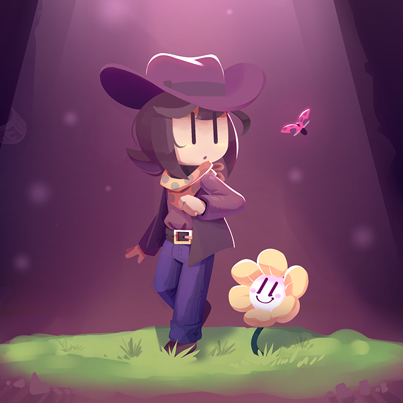

Windowkill
I kind of picked this game up on a whim after watching someone play it for all of 2 minutes, and instantly falling in love with it's concept and it's soundtrack. And... It might be the platonic ideal of a video game? It's got a great hook, snappy sound effects, a great soundtrack, and it's pretty cheap too! Basically, buy and play windowkill.
Highlight: Any time you're listening to the song "Windowbreaker"
Balatro
Anyone who is in the orbit of indie and/or rougelike games may have seen this coming, but I played Balatro this year and loved it. Perfect rougelike balance of familiar themes and rougelike deckbuilding. 10/10.
Highlight: Getting a huge combo and hearing the sound effects increase in tone

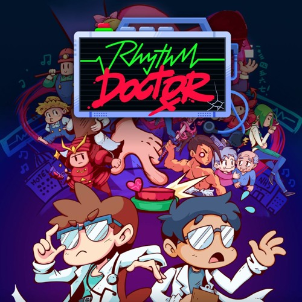
Rhythm Doctor
Ok, so I don't consider myself good at rhythm games. The genre is compelling, since I am one to enjoy a great soundtrack, and especially one to enjoy syncing actions to music, but I've always been bad at them. Or rather, unwilling (or unable) to dedicate the amount of time and practice needed to get good at them. Rhythm Doctor lets me pass by not getting all too difficult, while never losing that great rhythm-y feel you get when slamming the spacebar to the beat. Couple that with some amazing songs and some really innovative levels, and you've got yourself a winner.
Highlight: OK, so my highlight of this game is actually the addional Muse Dash bonus levels. Because I liked them so much, I looked up the source material and it looked like someting I would absolutely not enjoy. Which is a shame, I love those songs and the characters, in animated pixel form, were quite endearing.
Bomb Rush Cyberfunk
This makes me think I should put dates on these entries, because since writing the entry for the BRC soundtrack, I have beaten the game! And it's incredible. Learning & mastering the movement is super satisfying, the world and asthetics are amazing, and the soundtrack is perfect.
Highlight: This screenshot.
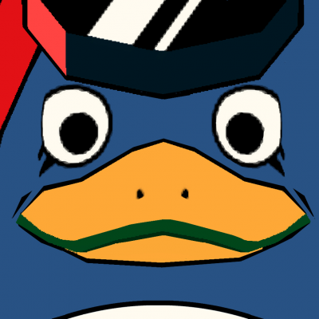

Unbeatable: [White Label]
This game has shown up in both Rhythm Doctor and No Straight Roads, and I should've taken that as a sign that I should play it regardless of my preconcieved notions of how good I would be at muse dash style two lane rhythm gameplay. That said, I can hold my own in this demo, and the songs are great.
Highlight: Proper Rhythm
Splatoon 3: Side Order
This was the last Splatoon story mode I had in my list before beng caught up, and the first one I got to play blind (aside from a couple trailers, at least) and I had a blast! It was a really nice mixup of the typical splatoon gameplay / formula, and I'm glad they chose to make completely new enemies instead of re-using the octos for the 5th time.
Highlight: Pearl Drone
Honorable Mentions:
Paper Mario: The Thousand Year Door
Albums:
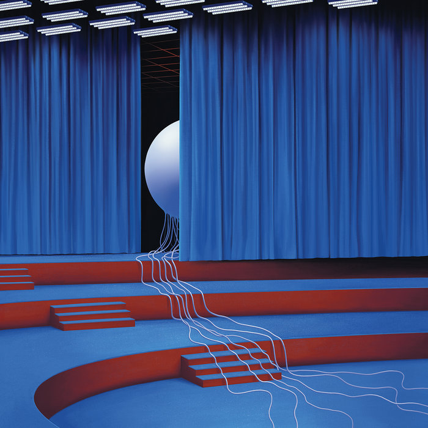
Digital Nightmare - TWRP
I always look forward to new TWRP album drops, and Digital Nightmare was no exception. as of writing, I've been listening a lot over the past few days, and I'm loving every second of it. Another shoutout to Friends of the Blues, which also came out recently.
Highlight: Online & A Human's Touch
These Nuts - Ninja Sex Party
I'll admit I've been less excited for new NSP in recent years, but I've gotta admit These Nuts really did it for me. There was a lot of variety in the presentation of These Nuts, and my experience with These Nuts was rich with texture and nuance. These Nuts kept me coming back for more.
Highlight: Sports Anthem
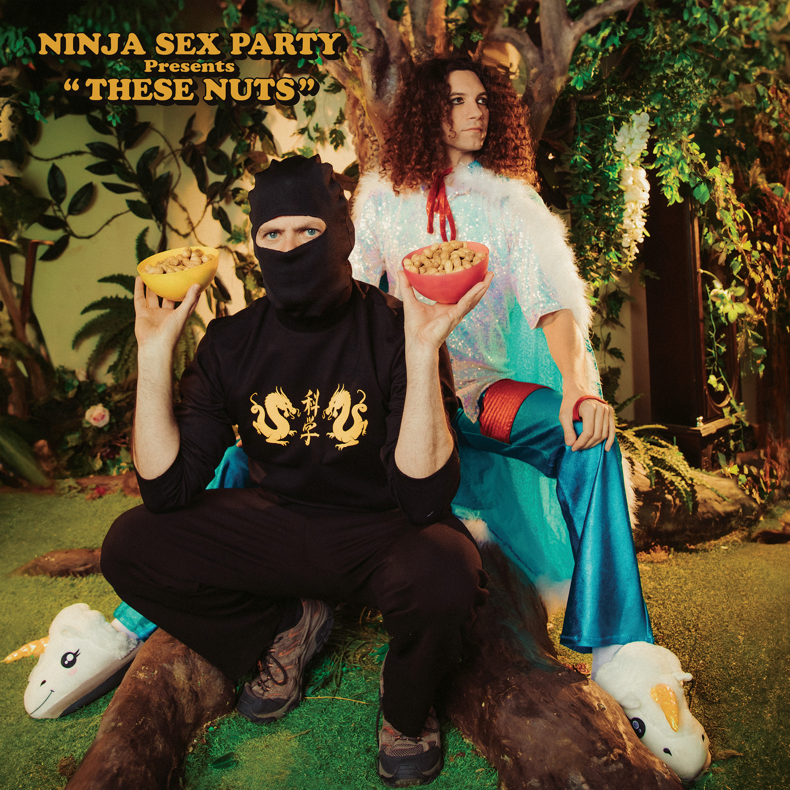
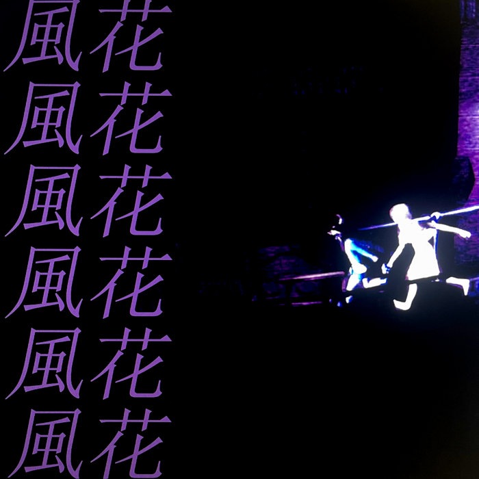
FOREVER II - Kazahana
For a little while, I dipped my toe into the world of atmospheric drum and bass music for this first time this year, and I think it was safe to say that I'd been missing out thus far. I picked up a couple albums off of bandcamp and picked some more from a couple youtube compilations and have been having a great time.
Alive 2007 - Daft Punk
I didn't think I could like live albums. After all, who wants some randoms cheering over your nice music? Suffice to say, I was completely wrong. It may have helped that the first time I heard a song from this album (Around the World/Harder Better Faster Stronger) was while playing it's Beat Saber level, where having a crowd cheering in the back is a great enhancement to the experience.
Highlight: Human After All / Together / One More Time (Reprise) / Music Sounds Better With You (Stardust) (Yes that's all one song)No the superscript isn't part of it
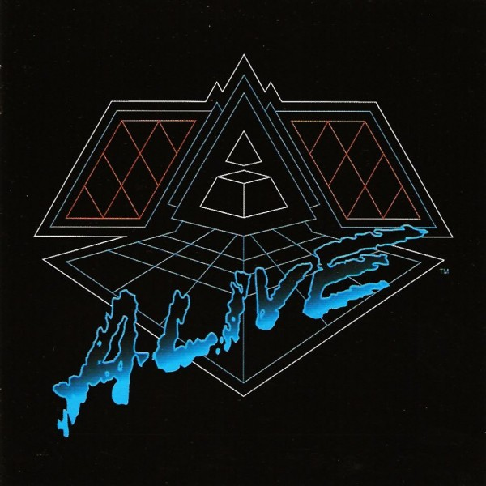
Honorable Song Mentions:
Rattlesnake (King Gizzard and the Lizard Wizard), Face to Face (Daft Punk)
Game OSTs:
A lot of this game OST section is gonna be a mirror match for my favorite games, but I like games that have good music, and I like the music for good games.
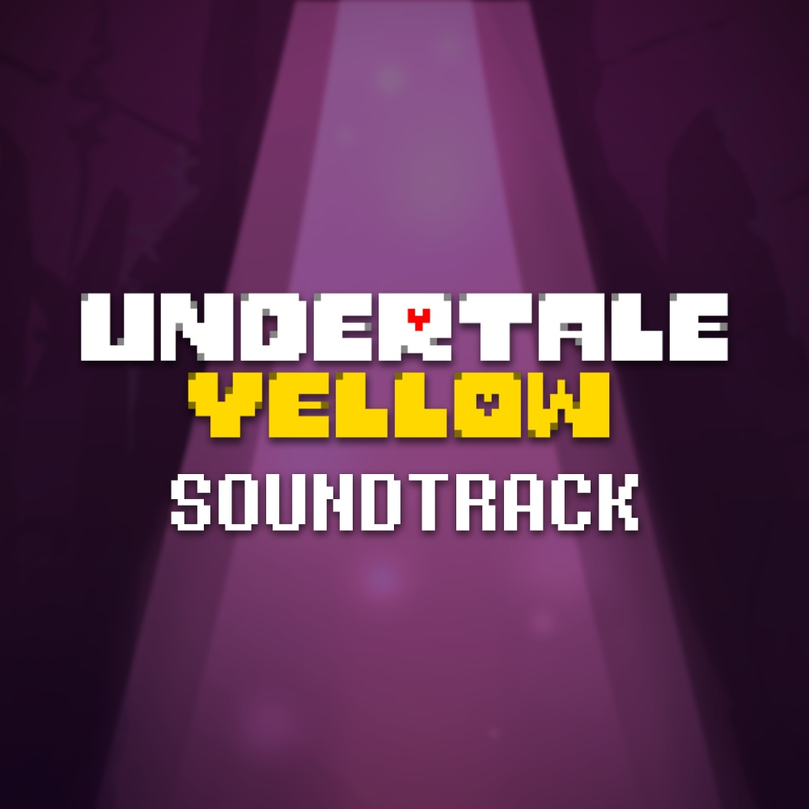
Undertale Yellow
It feels like near tradition for any Undertale-related project to come out of the box with good music, and UTY is no exception. All you favorite Undertale music tropes are here, the banging boss themes, the reused leitmotifs (positive), and the soundfonts taken from older games. Even if you're not interested in playing the game, the soundtrack is worth listening to if you like Undertale's music.
Highlight: That awesome guitar bit in specimen:clay that only plays once
Cobalt Core
Much like my love for the game itself, my love for the soundtrack also grew exponentially the more I listened to it. It's now one of my all time favorite game soundtracks for sure, and makes me really want to go back and listen to all of Aaron Cherof's other work.
Highlight: Polytrope
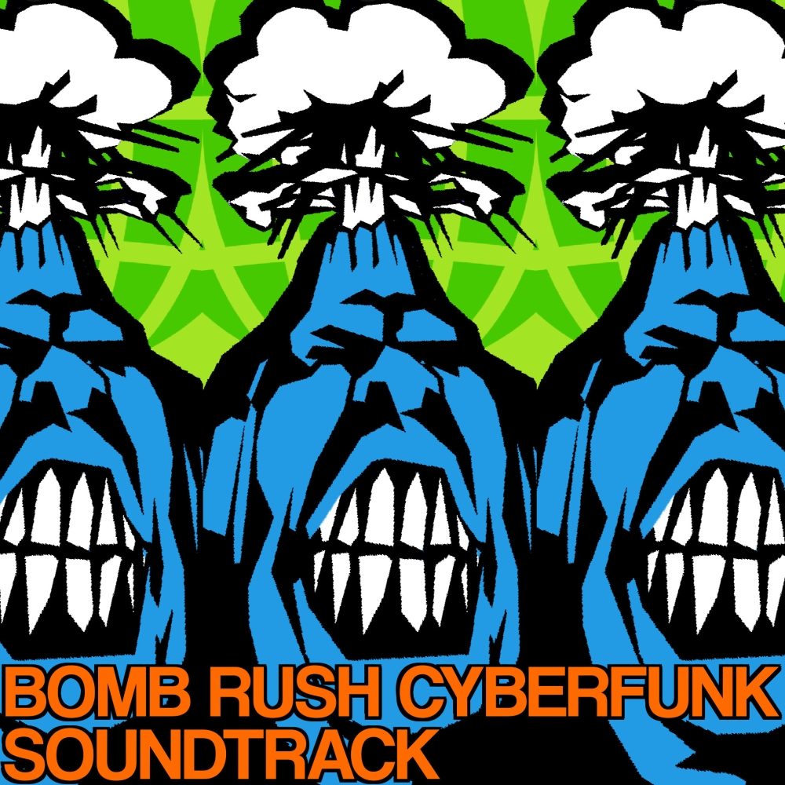
Bomb Rush Cyberfunk
To be honest, I'm quite surprised that I didn't make an entry for BRC last year. I didn't play the game, mind (and still haven't beaten it to this day), but it's soundtrack works just as well as a standalone album. and it is a truly great collection of songs. Drawing inspiration from it's spiritual predecessor - Jet Set Radio.
Highlights: All three Hideki songs, Wanna Kno, and Precious Thing
Katamari Damacy / We Love Katamari
I've never played these games before, but this music is fantastic. Though I will forever associate Katamari on the Rocks with Kingdom Hearts III for... Reasons..
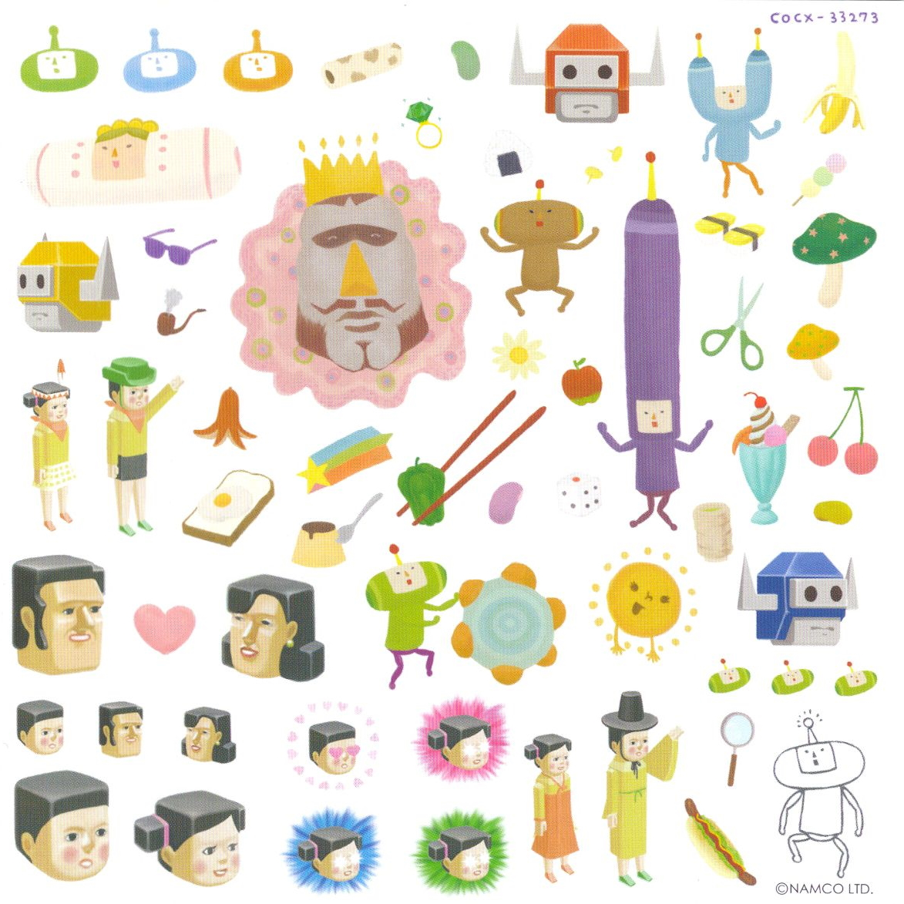
Honorable Mentions:
Windowkill, Balatro, Tetris for the Phillips CDI (yes, really), Arms, TS! Underswap, Bomb-Sniffing Pomeranian and the Muse Dash songs from Rhythm Doctor
Compilation Albums:
I wanted to keep these seperate, since they don't exactly feel like soundtracks or regular albums, per se.

Little Big Planet: Karting
This may seem like an odd choice, but the LitteBigPlanet games were quite formative to my early gaming experience, as too was it's music. I chose Karting especially, since I really ended up liking a lot more of the tracks here than I expected upon revist.
Highlight: Fresh
Just Shapes and Beats
This had to show up somewhere in this list, since these songs have occupied and fuelled a part of my music taste ever since I saw snippets of that one boss fight compilation video on youtube. They've also served as somewhat of a gateway drug to Monstercat and other adjacent songs, so there's that.
Highlight: New Game


Album 99: Press Start
Back in the high school days, I was a fan of Ninety9Lives, after they were spearheaded by some minecraft youtube guy. Thusly I have a lot of nostalgia for early 99L, pretty much everything up to Album 89. The nostalgia really hits storngest with this album, and Ascend in particular really gut punches me back...
Highlights: Ascend, Into the Night
Mouth Moods
Is this the right place to put this album? I don't even know how to place it. But this album, and the other three Mouth albums, are a real treat to listen to if you haven't before. As someone who isn't very well musically rounded, I heard a lot of songs in these albums for the first time, which made it odd to hear the originals...
Highlight: Wallspin

AHA! You FOOL! You've Fallen Into My Trap!!
This isn't a list of my favorite design styles at all!! This is an appreciation zone for the one design style to rule them all, the apex asthetic, and that is:

Image sourced from Asthetics Wiki
Frutiger Aero and it's asthetical cousin, the Y2K asthetic, are personal fascinations/nostalgia objects of mine. No wonder, given F.A. being particularly present when I was growing up. Something about the abstract areas, show-offy High Definitions, and illogical futuristic spaces tickle my brain.
Frutiger Aero to tickle your brain:


Images sourced from fruitigeraero.tumblr.com


We had these growing up!! love that transparent plastic look

This is from a branch style called "Frutiger Metro", and I mean wow. Love it.
Sourced from fruitiermetrostation.tumblr.com


{kind=link}